Hoki, Tottori: things to do, food and stays
Hoki · Tottori
Hoki
Highlighted on the Tottori map.

Stay
メルキュール鳥取大山リゾート&スパ
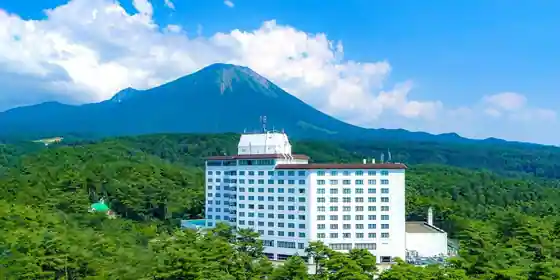
Merukyuru Tottori Oyama Resort & Supa
オーベルジュ 天空
Oberuju Tenku
Inn in Kanayatani, Hoki with open-air baths and scenic views.
NOMADO HOTEL DAISEN
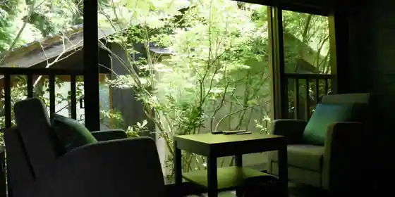
NOMADO HOTEL DAISEN
ホテル旬香 鳥取大山リゾート
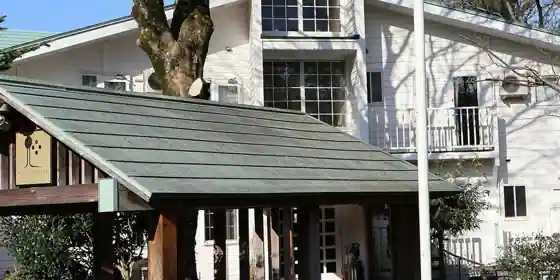
Hotel Shunko Tottori Oyama Resort
狗賓大山
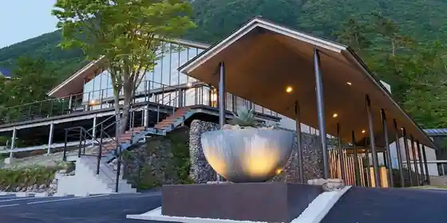
Ku Hin Oyama
ペンションアップリケ
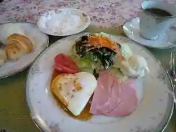
Pension Appurike
ペンション＆コテージ ブーメラン
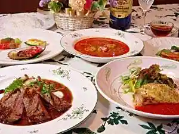
Pension & Cottage Bumeran
雄峰ペンション
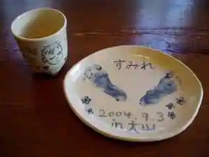
Yuho Pension
Pension in Mano, Hoki with family-friendly stays.
沖村ペンション
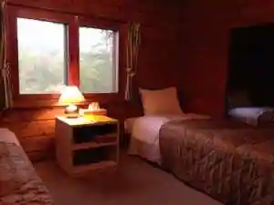
Okimura Pension
メルキュール鳥取大山リゾート＆スパ
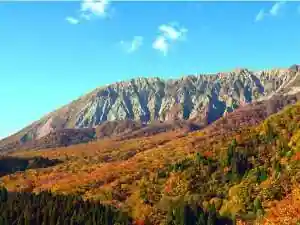
Merukyuru Tottori Oyama Resort & Supa
ＦＢＩ ＤＡＩＳＥＮ
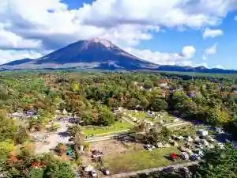
FBI DAISEN
ペンション あすか
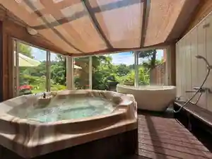
Pension Asuka
Pension in Kanayatani, Hoki with one group per day and a retreat concept.
Dining
リストランテ天空
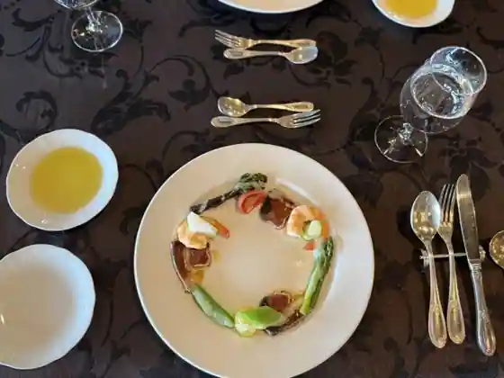
Risutorante Tenku
そば処 井田農園
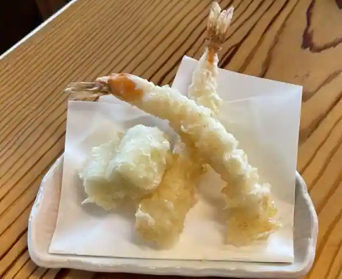
Soba Tokoro Ida Noen
大山まきば みるくの里
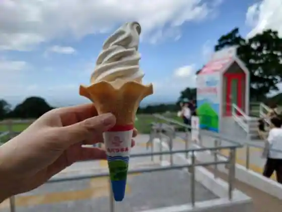
Oyama Makiba Mirukuno Sato
ビアホフ ガンバリウス
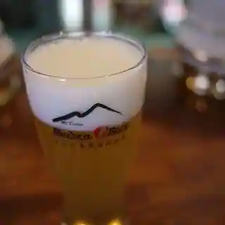
Biahofu Ganbariusu
Mr.Burger
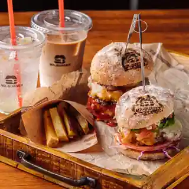
Mr. Burger
八郷の里
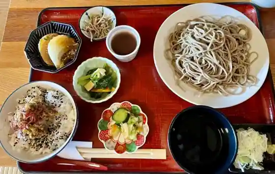
Yasato No Sato
テラス ザ ダイセン
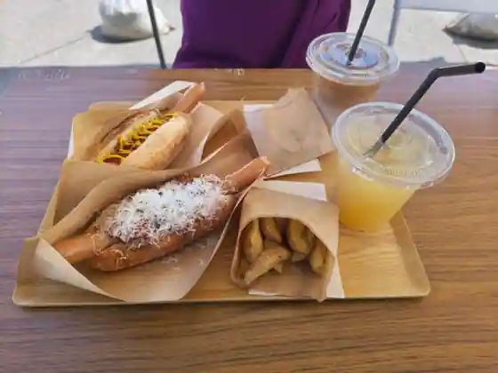
Terrace Za Daisen
コウボパン小さじいち
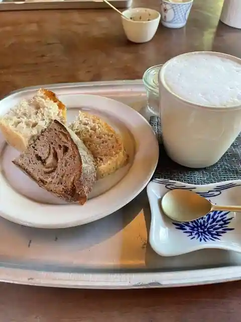
Koubo Bakery Chisa Jichi
まつおか
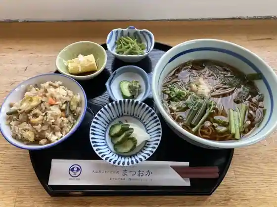
Matsuoka
郷の鮨 たむら
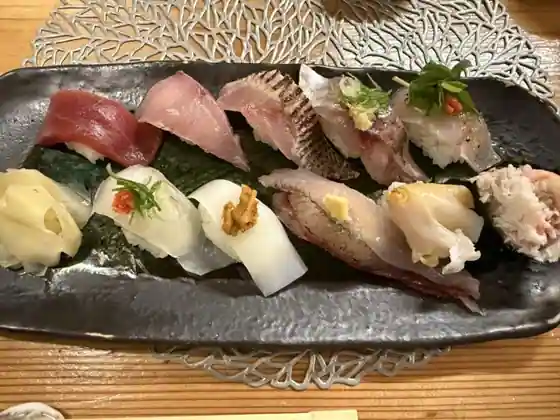
Sato No Sushi Tamura
大山ゴルフクラブレストラン
Oyama Gorufukurabu Restaurant
そば処 ひだか
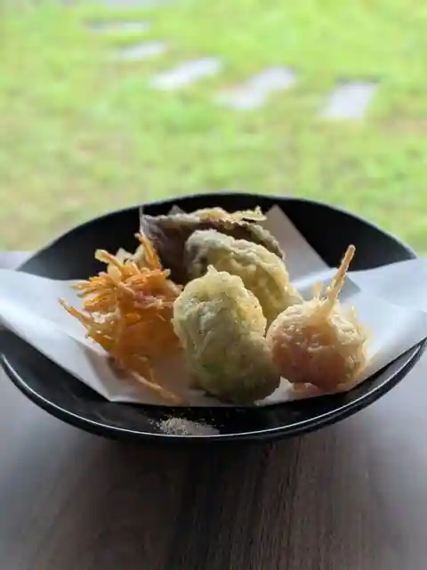
Soba Tokoro Hidaka
そば処 桔梗
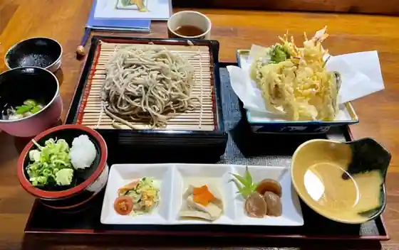
Soba Tokoro Kikyo
狗賓 ホテル&リゾート グヒン ダイセン
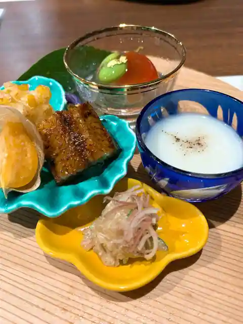
Ku Hin Hotel & Resort Guhin Daisen
大山パーキングエリア（上り線） スナックコーナー
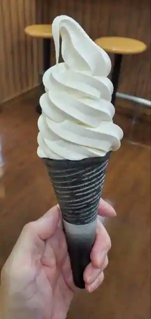
Oyama Pakingueria (Nobori Sen) Sunakkukona
ひの木家 岸本店
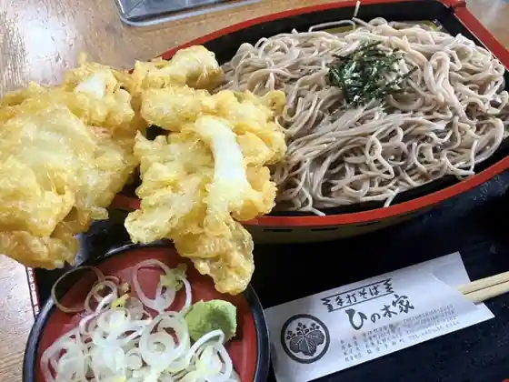
Hino Ki Ie Kishimoto
Cafe うさぎや
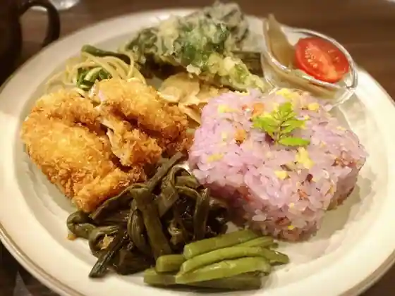
Cafe Usagiya
おいしいぱんの満てん
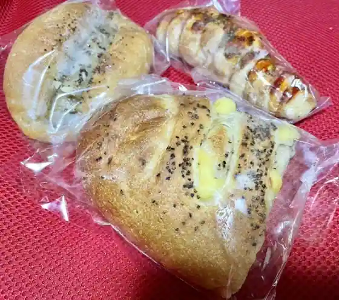
Oishipanno Mite N
おらほや
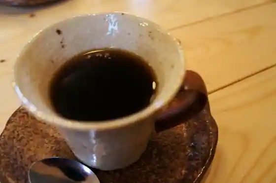
Orahoya
前田商店
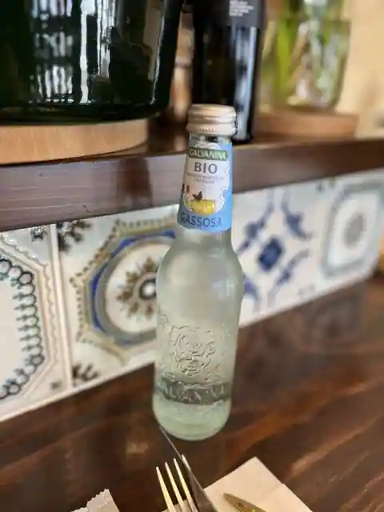
Maeda Sho
大山平原ゴルフクラブレストラン
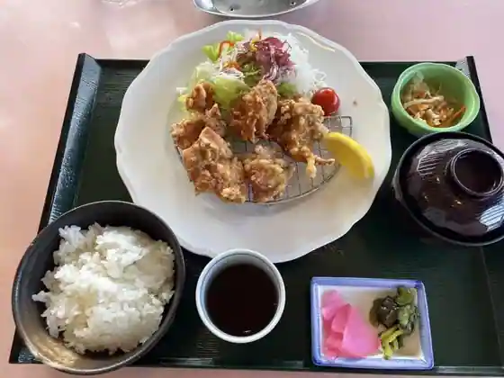
Oyama Heigen Gorufukurabu Restaurant
食処 そうしゃん
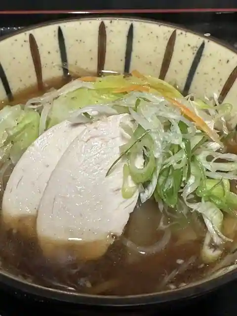
Shoku Tokoro Soshan
Sights
Oyama Makibamiruku Village

Oyama Masumizu Highlands Masumizu Kogen Tenku Rifuto

Ueda Masaji Shashin Art Museum
Kishimoto Onsen (Yuai Paru)

Oyama Penshon Village Ai no Piapenshon Village

Miruku no Sato Tokusei Sofutokuriimu
Hoki Kuni Sangaku Art Museum
Hoki Town Hall